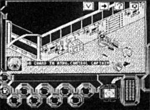

Wreckers


{kind=link}

| Publisher: | Audiogenic Software |
| Price: | £10.99 |
| Year: | 1991 |
| Source: | CRASH, Issue 88 |

This title was intended for the ZX Spectrum 128K, it received high previews and a 93% review score from Crash magazine in 1991, but the game was never released commercially.
This game is skill. Remember that because it’s going to sound really complicated. Skill, skill, skill. Right, let’s get on with it.
Essential plot elements: You’re one of three keepers on an outpost space station called Beacon 04523N. The Beacon’s purpose is to send navigation transmissions to passing ships so they keep on the right track and don’t fall into any dirty great black holes. No matter what, you must keep the Beacon functioning. Assisting you are three droids who can clean, fix, explore and defend. If three aren’t enough, more can be constructed.
the Beacon, and you can call up a view
option just to make sure they’re doing
their job
Should the Beacon be invaded, a self-destruct mechanism is initiated, which has a one-hour countdown and can’t be switched off until the Beacon’s invader-free. Today, the communications computer informed you that organic life forms have been spotted approaching Beacon 04523N...
Wreckers is an isometric 3D arcade adventure with lots of strategy and blasting. There’s heaps to do and the Beacon is pretty big, consisting of around 35 rooms and corridors. The graphically detailed scenery scrolls around at a speedy pace.
Your first job is to select one of the three keepers to control; each are blessed with their own characteristics but effectively operate as your three lives. As your chosen keeper comes out of suspended animation, there’s a couple of minutes before the computer alerts you to oncoming aliens. So you’ve got a bit a time to do a few jobs. Building up your army of droids is a good thing to do; they’re constructed in the Factory location. Where’s that? Well, call up the map of the ship and you can see exactly where it is.
One brilliant thing about Wreckers is that you don’t spend most of your time trudging around corridors. The Beacon’s equipped with vertical and horizontal zipways, which are like elevators only a bit quicker and speed you between locations in a ‘zip!’
The invaders are Plasmodians — small, gooey lumps of alien slime — but are better known as Wreckers, because they destroy anything they come in contact with. There are several ways to combat the Plassies. As they’re approaching the beacon, you can enter one of four battlepods. This puts you at the controls of a massive Hoover-like contraption: as the Plassies come close, simply suck ’em up!
The next attack procedure is to blast them as they attempt to get through the Beacon’s shell. Leaving via an airlock, you’re fitted with a spacesuit and jet-pack, giving you the freedom to zoom about space and blast Plasmodians.
Back inside, the Plasmodians pose a real threat as they spit large gobs of killer slime at you; however, a quick taste of laser death puts paid to them.
If your character’s energy is drained by Plasmodian attack return him to suspended animation or he’ll end up as a human Plasmodian, looking like a walking jelly, and completely deadly. When one keeper has died you can simply select another and carry on.
Checking the map shows which areas of the Beacon are under attack. You can’t be everywhere at once so it’s time to put a few droids into action. Selecting one of the droid panels (from the bottom of the screen) brings up a map of the ship and droid information. Droids can be ordered to any location of the ship and should they discover any invaders they’ll attack.
While all this invasion stuff is going on, keeping the Beacon functioning only adds to the panic. Four blub rooms must be kept operational, so the Beacon can continue broadcasting. The main computer gives the alert if one of the blub rooms is malfunctioning and when it does you’ve gotta run! To stabilise the blub, a waveform must be adjusted so it matches its partner.
The Plasmodians attack in waves and once one wave has been cleared you’ll be promoted — just in time to cope with another wave!
Wreckers’ gameplay is all about discovery. Which droids to use and how to use them, the best attack campaign to wage, and of course, learning all the uses for each computer and room. The depth of gameplay is immense. Just as you reckon you’ve cracked it, something else pops up to give you trouble. I reckon it’s the level of interaction with the semi-intelligent droids that puts this above many other arcade adventures — sending them off, getting one to fix another... it really is good fun basking in command.
Like I said, Wreckers is skill and so it should be — it’s been in development two years! It’s by Denton Designs, who also create Ocean’s Great Escape and Where Time Stood Still — two utterly fab games. Imagine those only ten times better and you have a vague idea how skill Wreckers is (ie, it’s very skill!).
RICHARD — 93%
You would’ve thought everyone had got fed up of 3D arcade games like this; they were all the rage a few years back. I for one can’t get enough of them, especially when they’re as good as Wreckers. It’s not as immediately playable as other 3D games, you need to have a good read of the instructions and understand what each room’s function is before you can really get into it. Once you’ve got it sussed, I guarantee you’ll be playing late into the night. There’s such a variety of things to do — one minute you could be walking the corridors blasting alien slime, the next flying around in space zapping the dregs on the outside. Wreckers is an excellent game, a perfect combination of impressive graphics, alien blasting and strategy.
NICK — 92%
RATING
Intriguing arcade adventure with blasting overtones.
| Presentation: | 90% |
| Graphics: | 94% |
| Sound: | 90% |
| Playability: | 92% |
| Addictivity: | 93% |
| Overall: | 93% |